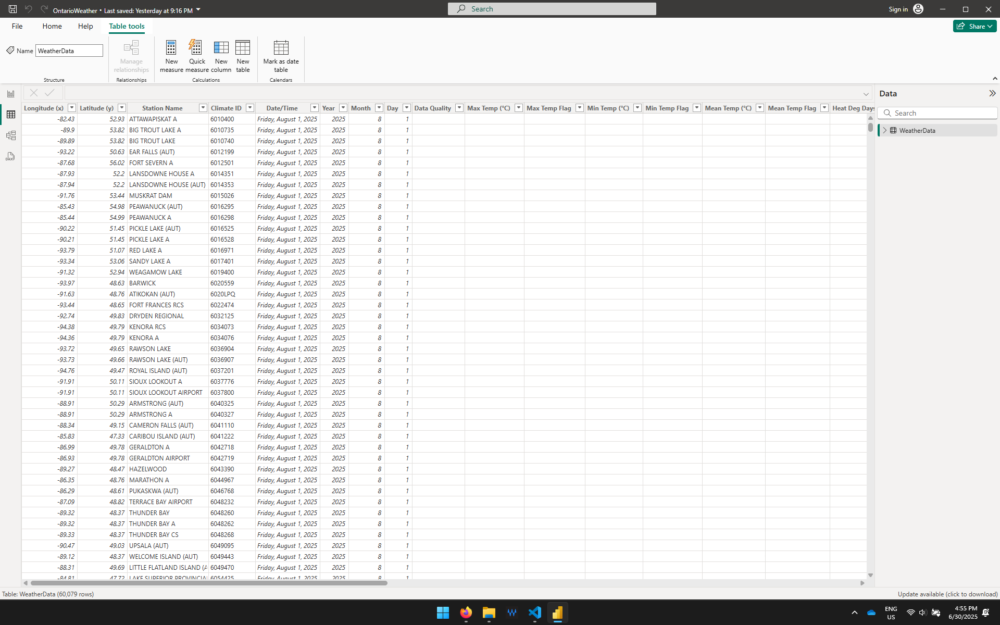

This Power Query (M) script is used in Power BI to dynamically pull, clean, and organize historical weather data from Environment Canada’s open data portal.
Step 0: Define Parameters
This step defines the base URL that points to the folder containing Ontario’s daily climate CSV files on the Environment Canada data portal.
BaseUrl = "https://dd.weather.gc.ca/climate/observations/daily/csv/ON/",View Raw Dataset on weather.gc.ca
Step 1: Get HTML content and extract raw lines
Loads the HTML from the target URL, converts it into text, and splits it into individual lines for further parsing.
Source = Web.BrowserContents(BaseUrl),
ExtractedTable = Html.Table(Source, {{"Content", "BODY"}}),
AllContent = Text.From(ExtractedTable[Content]{0}),
FileLines = Text.Split(AllContent, "#(lf)"),Step 2: Filter valid .csv climate files
Filters out only the filenames that match the expected `climate_daily_*.csv` pattern, then trims them clean for use.
CsvFiles = List.Select(FileLines, each Text.Contains(_, "climate_daily_") and Text.Contains(_, ".csv")),
TrimmedNames = List.Transform(CsvFiles, each Text.Trim(Text.BeforeDelimiter(_, ".csv") & ".csv"))Step 3: Extract year and prepare structured data
Parses each file name to extract the year from its components and builds a list of records with the file name, URL, and year.
ParsedData = List.Transform(TrimmedNames, each
let
Parts = Text.Split(Text.BeforeDelimiter(_, ".csv"), "_"),
YearPart = Parts{4},
YearOnly = if Text.Contains(YearPart, "-") then Text.Start(YearPart, 4) else YearPart,
Year = try Number.FromText(YearOnly) otherwise null
in
[FileName = _, FileUrl = BaseUrl & _, Year = Year]
),Step 4 & Final Output of Source Step
Convert the structured list of records into a Power BI table and complete the Source step by outputting the resulting table to the query chain.
ResultTable = Table.FromRecords(ParsedData)
in
ResultTableThis step filters the dataset to include only records where Year is greater than or equal to 2025.
= Table.SelectRows(Source, each [Year] >= 2025)This step loads the contents of each CSV file, promotes headers, and combines all of them into a single table.
= let
AddCSVContent = Table.AddColumn(#"Filtered Rows", "CSVContent", each Csv.Document(
Web.Contents([FileUrl]),
[Delimiter=",", Encoding=1252, QuoteStyle=QuoteStyle.None]
)),
PromotedHeaders = Table.TransformColumns(
AddCSVContent,
{"CSVContent", each Table.PromoteHeaders(_, [PromoteAllScalars=true]), type table}
),
Combined = Table.Combine(PromotedHeaders[CSVContent])
in
CombinedThe final result is a fully combined and cleaned dataset, ready for analysis and visualization in Power BI. All data has been filtered, loaded, and standardized across files to ensure consistency and accuracy.
